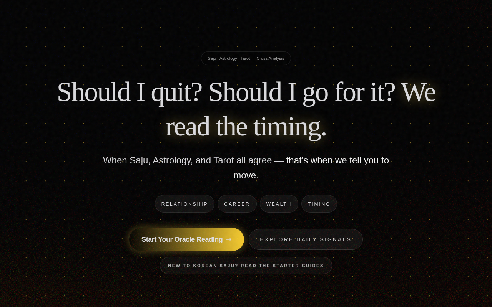

CosmicPath 디자인 시스템
Mystical Oracle × Retro-Futuristic — void 위에 황금 오라클 터미널. gold(#D4AF37)가 97회 등장하는 단일 브랜드 앵커.

분위기와 철학
Mystical Oracle × Retro-Futuristic. void 위에 뜬 황금 오라클 터미널.
CosmicPath reads like an oracle terminal carved in void — the user arrives in absolute darkness (#050505), and gold text (#D4AF37) rises from it the way candlelight rises from black marble. The surface is not a dashboard; it's a consultation chamber. Every headline in Cinzel serif carries the weight of ceremony. The CTA button — a 135° gold gradient — is not a button. It's an invitation.
The color system is built around a single chromatic anchor: gold. #D4AF37 (--acc-gold) accounts for 97 of the top frequency entries — more than any other chromatic color. There is no second brand color in the traditional sense; indigo (#6366F1) and violet (#8B5CF6) serve as domain-specific accents, but neither competes with gold for the primary CTA role. Gold is the oracle's voice. Everything else is context.
The dark background trilogy — void (#050505), deep (#0A0A0C), surface (#121214) — is not a palette shortcut. Each step is a distinct stage. Motion is alive but restrained: shooting stars on 7s intervals, core pulse rings, hover lifts with gold aura glow. Glass panels float with backdrop-filter: blur(12px).
Quick Start
5분 안에 CosmicPath처럼 — 3가지만 하면 80%
body { font-family: "Apple SD Gothic Neo", "Noto Sans KR", sans-serif; }
h1,h2,h3 { font-family: "Times New Roman", Georgia, serif; }
:root { --bg: #050505; --fg: #e4e4e7; }
body { background: var(--bg); color: var(--fg); }
:root { --brand: #D4AF37; --brand-dim: #C49840; }
.btn { background: linear-gradient(135deg, var(--brand) 0%, var(--brand-dim) 100%); }
#000000 또는 #111로 두지 말 것. CosmicPath의 void는 #050505 (5% 회색) — 이 미세한 차이가 금색 텍스트가 떠오르는 깊이를 만든다.
출처 & 메타
분석 방법 및 소스 데이터 출처.
https://cosmicpath.app-- (네임스페이스 없음 — 사이트 자체 설계)3.2Tech Stack
Next.js 15/16 App Router + Tailwind v4 + 커스텀 디자인 토큰.
lang="en" HTML)@layer properties 시그니처 + calc(var(--spacing) * N)) + 커스텀 디자인 토큰.btn-primary, .context-btn).btn-primary, .context-btn, .tarot-card-back)#050505. light mode CSS 없음 (dark only).--acc-gold: #D4AF37 — CTA 버튼 + active 상태 + pulse 애니메이션의 단일 진실 공급원Font Stack
Display serif (oracle 권위) + sans body (한국어/영어 bilingual) 이중 구조.
"Times New Roman", "Georgia", serif (Cinzel 런타임 폴백)
"Apple SD Gothic Neo", "Malgun Gothic", "Noto Sans KR", sans-serif
"Apple SD Gothic Neo", "Malgun Gothic", "Noto Serif KR", serif (Gowun Batang 폴백)
const gold = "#D4AF37""JetBrains Mono", "SFMono-Regular", "Menlo", monospace
font-variant: small-caps를 추가하면 oracle 분위기 근사치 달성. Weight 600이 강조 기준 — 700은 H1·H2 전용.
Typography Scale
Tailwind v4 기반 8단계 scale. 모바일 h1 강제 1.5rem 패치 존재.
max-width: 640px에서 h1에 font-size: 1.5rem !important 강제 오버라이드. 새 코드에서는 text-2xl md:text-5xl responsive variant 사용 권장.
Colors
단일 브랜드 앵커 #D4AF37 (gold) + 3단계 void 배경 + 도메인별 accent.
Spacing
4px 기반 Tailwind scale. 섹션은 숨 참기 공간 — 80px~192px 수직 패딩.
Radius
6단계 radius scale. 버튼 최소 6px, 히어로 카드 최대 24px.
badges
buttons
small cards
medium cards
large cards
hero panels
context-btn
Shadows
Gold aura glow 시스템. 카드는 기본 flat — shadow는 CTA·hover 전용.
Motion
살아있지만 절제된 움직임. 별똥별 7초 주기 + core pulse + hover lift.
Layout Patterns
비대칭 fr 그리드 + 100vh hero + .container-cosmic max 1200px.
Grid System
- Content max-width: 1200px (
.container-cosmic) - Grid type: CSS Grid (비대칭 fr) + Flexbox
- Columns: 1열 (mobile) →
1.35fr .95fr(desktop) - Gutter:
gap-6(24px) ~gap-8(32px)
Hero Pattern
- Height: 100vh (
h-screen) - Layout: 1-column centered
- Background: void #050505 + noise 0.04 + shooting stars
- H1: Cinzel serif / clamp(1.5rem, 5vw, 3.75rem) / w700
Card Patterns
- Glass card:
bg #FFFFFF0D+border #FFFFFF14+blur(12px) - Surface card:
#121214+border rgba(255,255,255,.05) - Radius:
rounded-2xl(16px) ~rounded-3xl(24px)
Navigation
- Type: horizontal (desktop) + 모바일 추정 햄버거
- Position:
fixed top-0 z-[9999] - Padding:
py-4 px-4→xl:px-6 - Background: transparent (scroll blur 추정)
Responsive Behavior
모바일 퍼스트. 6단계 Tailwind 기본 breakpoint.
Components
Gold CTA, Ghost 버튼, Glass 카드, Category Pill — 4개 핵심 패턴.
.btn-primary {
background: linear-gradient(135deg, #D4AF37 0%, #C49840 100%);
color: #000;
border-radius: 6px;
padding: 12px 24px;
font-weight: 700;
box-shadow: 0 4px 20px rgba(212,175,55,.3);
transition: all .3s;
}
.btn-primary:hover {
transform: translateY(-2px);
box-shadow: 0 6px 30px rgba(255,215,0,.4);
}
bg 135° gold gradientcolor #000000radius 6px (--radius-md)padding 12px 24pxweight 700hover 시 2px lift + gold aura glow — 버튼이 빛난다
bg transparentborder 1px solid rgba(255,255,255,.2)color #E4E4E7 (--fg-starlight)빛 없는 경계 — gold와 대비로 위계 형성
radius 24px (pill)padding 8px 16pxhover border-color rgba(212,175,55,.5)active gold gradient + color #000활성 상태에서 gold gradient → 브랜드 피드백
bg rgba(255,255,255,.05)border 1px solid rgba(255,255,255,.08)radius 16px (rounded-2xl)filter blur(12px)경계가 물리적이 아닌 빛의 굴절처럼
Content / Copy Voice
1인칭 질문형 → 오라클 단언 구조. 신비롭지만 단언적.
Drop-in CSS
--cp-* prefix로 네임스페이스 격리. 복사 후 즉시 사용 가능.
/* CosmicPath — copy into your root stylesheet */
:root {
/* Fonts */
--cp-font-display: "Times New Roman", "Georgia", serif;
--cp-font-body: "Apple SD Gothic Neo", "Malgun Gothic", "Noto Sans KR", sans-serif;
--cp-font-mono: "JetBrains Mono", "SFMono-Regular", "Menlo", monospace;
/* Brand Gold */
--cp-gold: #D4AF37;
--cp-gold-dim: #C49840;
--cp-gold-light: #F4D88A;
--cp-gold-glow: rgba(212, 175, 55, 0.4);
/* Domain Accents */
--cp-acc-logic: #6366F1; /* saju */
--cp-acc-tarot: #8B5CF6; /* tarot */
--cp-acc-nebula: #FF3B30; /* alert */
/* Backgrounds */
--cp-bg-void: #050505;
--cp-bg-deep: #0A0A0C;
--cp-bg-surface: #121214;
/* Text */
--cp-text: #E4E4E7;
--cp-text-muted: #A1A1AA;
--cp-text-dim: #52525B;
/* Glass */
--cp-glass-bg: rgba(255,255,255,0.05);
--cp-glass-border: rgba(255,255,255,0.08);
/* Radius */
--cp-radius-sm: 6px;
--cp-radius-md: 12px;
--cp-radius-lg: 16px;
--cp-radius-xl: 24px;
/* Duration */
--cp-dur-fast: 0.2s;
--cp-dur-base: 0.4s;
--cp-dur-slow: 0.8s;
}
body {
background: var(--cp-bg-void);
color: var(--cp-text);
font-family: var(--cp-font-body);
font-weight: 400;
}
h1, h2, h3 {
font-family: var(--cp-font-display);
font-weight: 700;
letter-spacing: -0.025em;
}
.btn-primary {
background: linear-gradient(135deg, var(--cp-gold) 0%, var(--cp-gold-dim) 100%);
color: #000;
border: none;
border-radius: var(--cp-radius-sm);
padding: 12px 24px;
font-weight: 700;
transition: all 0.3s;
box-shadow: 0 4px 20px var(--cp-gold-glow);
}
.btn-primary:hover {
transform: translateY(-2px);
box-shadow: 0 6px 30px rgba(255,215,0,0.4);
}
.glass-card {
background: var(--cp-glass-bg);
border: 1px solid var(--cp-glass-border);
border-radius: var(--cp-radius-lg);
backdrop-filter: blur(12px);
}
Tailwind Config
v3 compatible tailwind.config.js — 모든 토큰 extend.
module.exports = {
theme: {
extend: {
colors: {
void: '#050505',
deep: '#0A0A0C',
surface: '#121214',
gold: {
DEFAULT: '#D4AF37',
dim: '#C49840',
light: '#F4D88A',
},
starlight: '#E4E4E7',
moonlight: '#A1A1AA',
dim: '#52525B',
'acc-logic': '#6366F1',
'acc-tarot': '#8B5CF6',
'acc-nebula': '#FF3B30',
},
fontFamily: {
cinzel: ['"Times New Roman"', 'Georgia', 'serif'],
noto: ['"Apple SD Gothic Neo"', '"Malgun Gothic"', '"Noto Sans KR"', 'sans-serif'],
mono: ['"JetBrains Mono"', 'SFMono-Regular', 'Menlo', 'monospace'],
},
borderRadius: {
sm: '0.25rem', md: '0.375rem',
lg: '0.5rem', xl: '0.75rem',
'2xl': '1rem', '3xl': '1.5rem',
},
boxShadow: {
'gold-sm': '0 4px 20px rgba(212,175,55,0.3)',
'gold-md': '0 6px 30px rgba(255,215,0,0.4)',
'gold-glow':'0 2px 10px rgba(255,215,0,0.2)',
},
keyframes: {
corePulse: {
'0%': { boxShadow: '0 0 0 0 rgba(255,215,0,0.4)' },
'70%': { boxShadow: '0 0 0 20px rgba(255,215,0,0)' },
'100%': { boxShadow: '0 0 0 0 rgba(255,215,0,0)' },
},
},
animation: {
'core-pulse': 'corePulse 2s cubic-bezier(0.4, 0, 0.6, 1) infinite',
},
},
},
};
Agent Prompt Guide
AI에게 CosmicPath 스타일 컴포넌트 요청 시 사용할 레퍼런스 토큰.
DO / DON'T
CosmicPath 정체성 보존 규칙.
✓ DO
- 배경을
#050505(void)로 — 순흑이 아닌 5% 회색이 오라클 깊이를 만든다 .btn-primary에 135° gold gradient 사용 — 단색 gold는 flat해 보인다- 헤딩에 Times New Roman serif + tracking-tighter 조합 — oracle 권위
- glass 패널에
backdrop-filter: blur(12px)필수 - CTA hover에 translateY(-2px) + gold glow 동시 적용
- 3단계 배경 구분: void → deep → surface
- 카드 border는
rgba(255,255,255,0.08)이하
✗ DON'T
- 배경을
#000000또는#111111로 두지 말 것 —#050505사용 - 텍스트를
#FFFFFF로 두지 말 것 —#E4E4E7사용 (눈이 아프다) - body에
"Times New Roman"사용 금지 — serif는 H1~H3 전용 font-weight: 400이하 gold 텍스트 금지 — 얇은 weight에서 사라진다- 버튼 border-radius
0~2px이하 금지 — 최소 6px #6366F1/#8B5CF6을 CTA에 금지 — 도메인 전용 accent- light background 금지 — 전체 사이트 dark only
Known Gaps & Assumptions
분석 범위 외 항목 — 추후 보완 필요.